Vue 3 퇴직연금 서비스 프론트 구조 설계
컴포저블과 공통 컴포넌트 중심으로 화면 구조부터 UI 개발까지 일관되게 설계했습니다.
- 컴포저블(Composable), 세션스토리지 등 상태 관리와 공통 로직 유틸 설계·구현
- 버튼·배지·테이블과 모달·툴팁·다이얼로그 등 인터랙션 컴포넌트를 재사용 구조로 구축
- Dart Sass 기반 스타일 구조 설계와 BEM 네이밍 적용, 스타일 가이드 정립
금융·커머스·게임·포털·언론 6개 산업에서 퍼블리싱부터 Vue 3 화면 구조 설계까지 수행했습니다. 화면을 맞추는 데서 끝나지 않고, 다음 사람이 이어받을 수 있는 컴포넌트 구조와 빌드 환경까지 남기는 것을 기준으로 일합니다.
React·Next.js·Svelte 코드를 직접 만들고 검증하는 도구를 만들었기 때문에, 프레임워크가 바뀌어도 같은 구조 원칙으로 설계할 수 있습니다.
실무 프로젝트 5곳(다우기술·플그림·삼성 R&D 캠퍼스·키움증권·트라이씨클)에서 구조 설계와 개발을 맡았습니다.
Next.js 시작 템플릿을 직접 만들었고, 퍼블리싱 자동화 프로그램이 React + Next.js 프로젝트를 분석·생성·검사합니다.
모션 자동화 프로그램(Motion Agent)이 같은 모션을 Svelte·Tailwind·GSAP 등 8가지 형식의 코드로 만들어 냅니다.
Nuxt(JS·TS), Vue + Vite, HTML + jQuery + SCSS 시작 템플릿 7종을 직접 만들어 새 프로젝트 준비 시간을 줄였습니다.
15개 회사의 대표 작업을 최근순으로, 맡은 역할과 결과 중심으로 정리했습니다.
컴포저블과 공통 컴포넌트 중심으로 화면 구조부터 UI 개발까지 일관되게 설계했습니다.
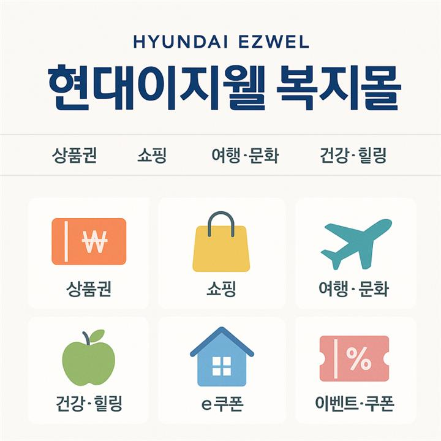

페이지 단위 템플릿 컴포넌트와 컴포넌트 단위 SCSS로 UI 일관성과 유지보수성을 높였습니다.
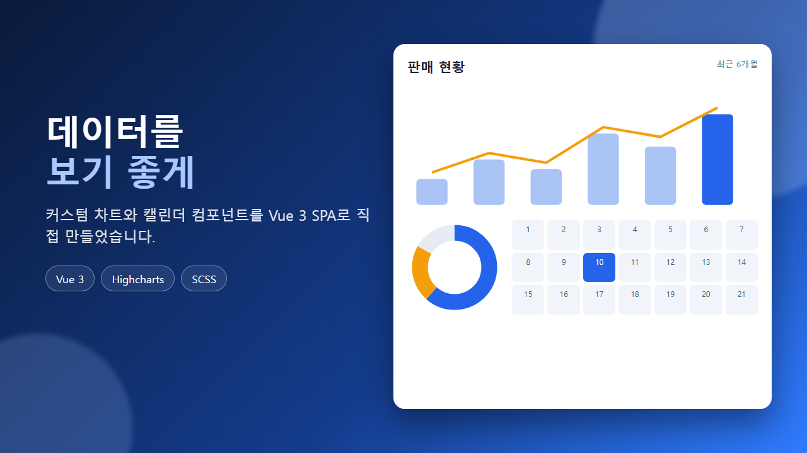

고도화된 비즈니스 데이터를 위한 커스텀 차트와 캘린더 컴포넌트를 직접 제작했습니다.
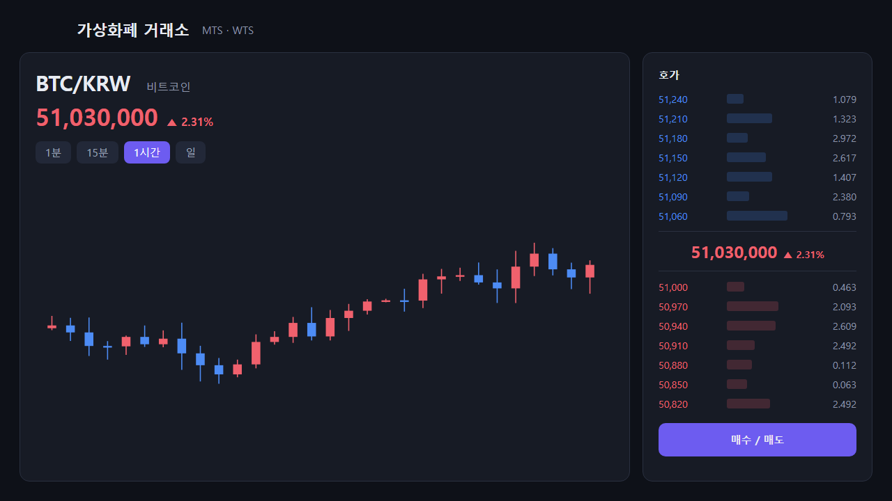
SCSS·ES6 자동화 빌드 환경과 모드별 변수 분리로, 하나의 소스가 모바일·PC와 여러 테마를 지원하게 했습니다.
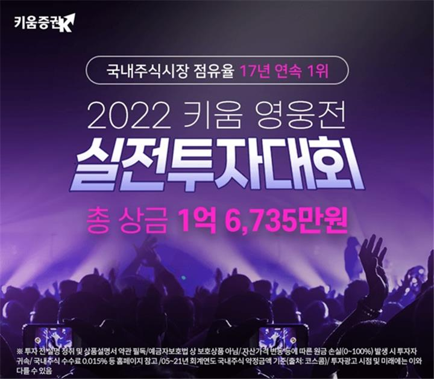
Highcharts의 formatter까지 커스터마이징해 랭킹·수익률 화면의 차트 동작을 설계하고 구현했습니다.
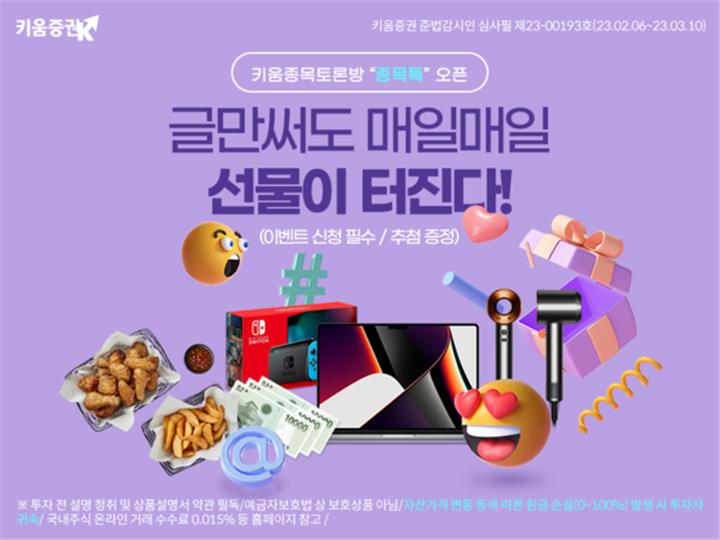
Lottie와 CSS3 애니메이션으로 캐릭터 모션 16개를 제작해, 클릭하면 모션이 출력되는 인터랙션으로 만들었습니다.
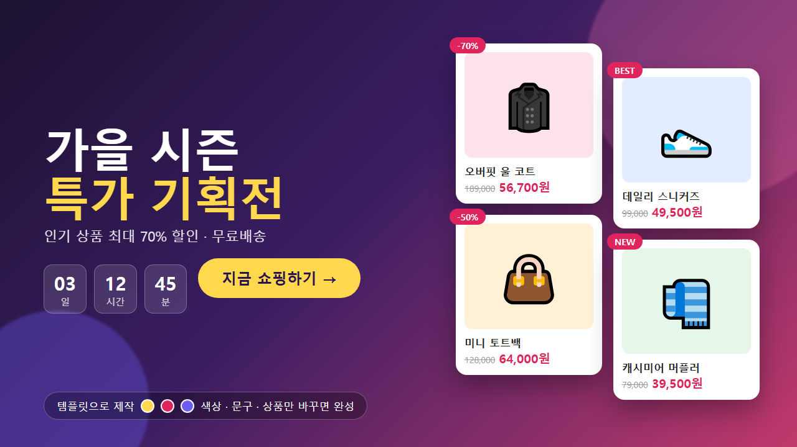
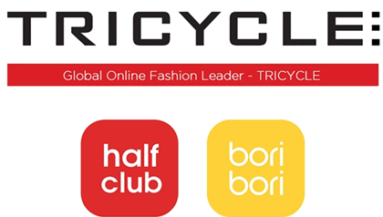
MD 같은 비개발자도 쓸 수 있는 템플릿 시스템을 기획·제작해 기획전 제작을 자동화했습니다.
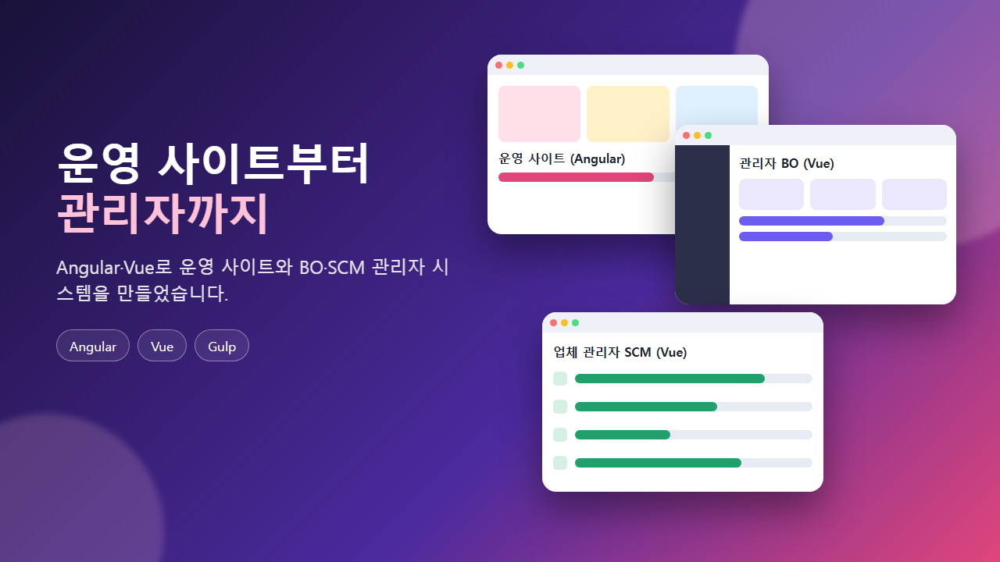
운영 사이트 유지보수와 관리자(BO·SCM) 리뉴얼을 맡고, 오픈 후 발생한 성능 이슈까지 해결했습니다.
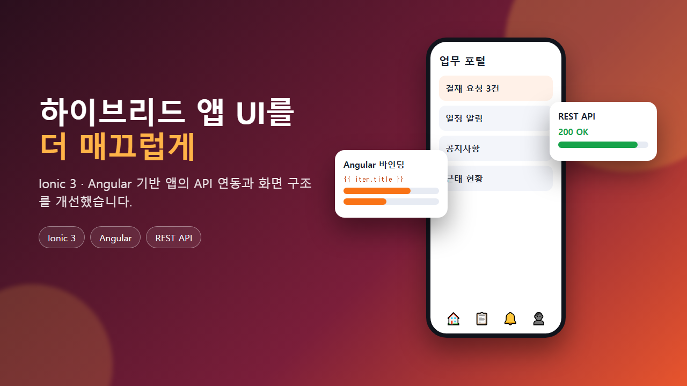

SK 계열사 하이브리드 웹앱의 유지보수와 UI 개선을 맡았습니다.
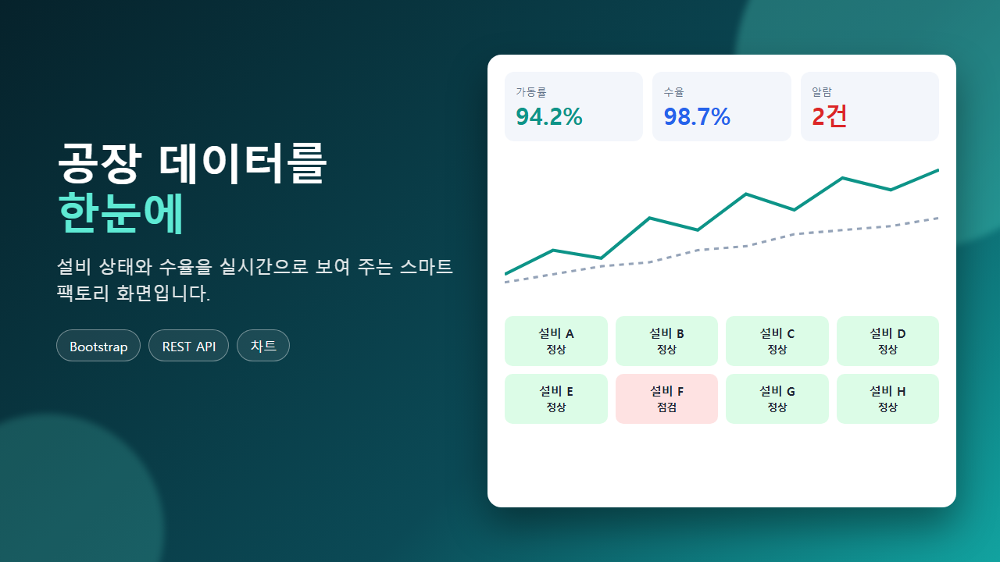

설비 상태와 운영 정보를 실시간으로 보여 주는 스마트팩토리 웹 화면을 구축했습니다.
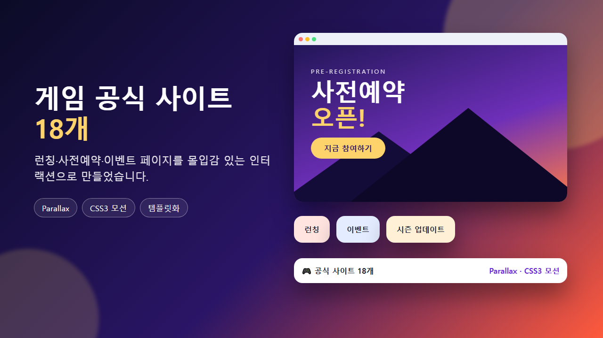
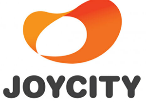
프리스타일, 창세기전, 테일즈런너, 소울워커, 크로스파이어 등의 공식 사이트를 구축하고 운영했습니다.
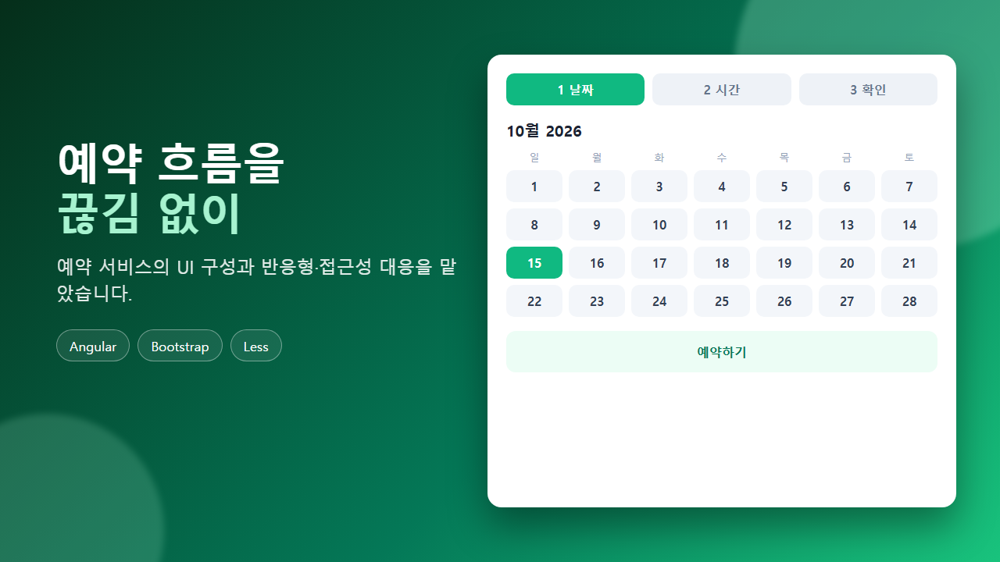

네이버 예약 관련 전 콘텐츠의 유지보수와 기능 대응을 맡았습니다.
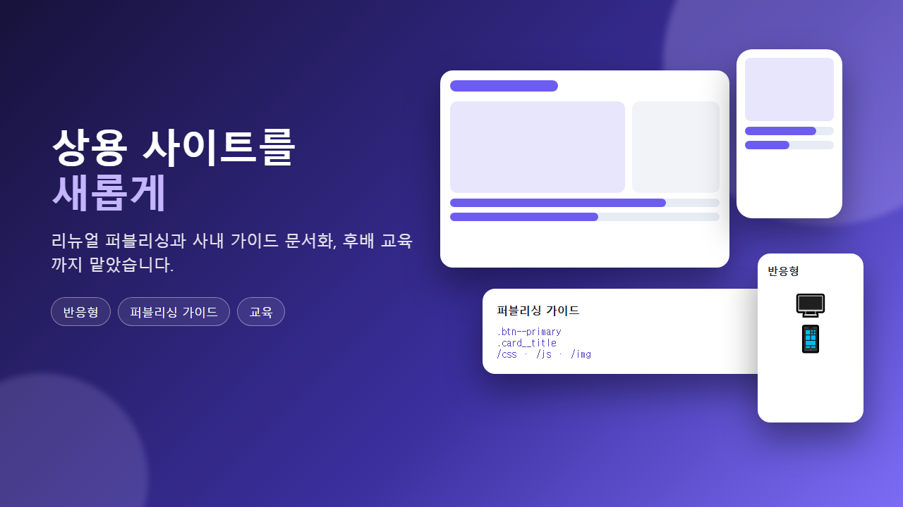

위포트·토커비·씨씨앙 등 상용 사이트의 UI 개편을 전담했습니다.
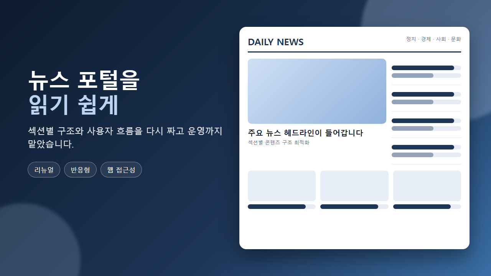

한국일보 웹사이트와 동그라미 홈페이지의 개편·유지보수를 맡았습니다.
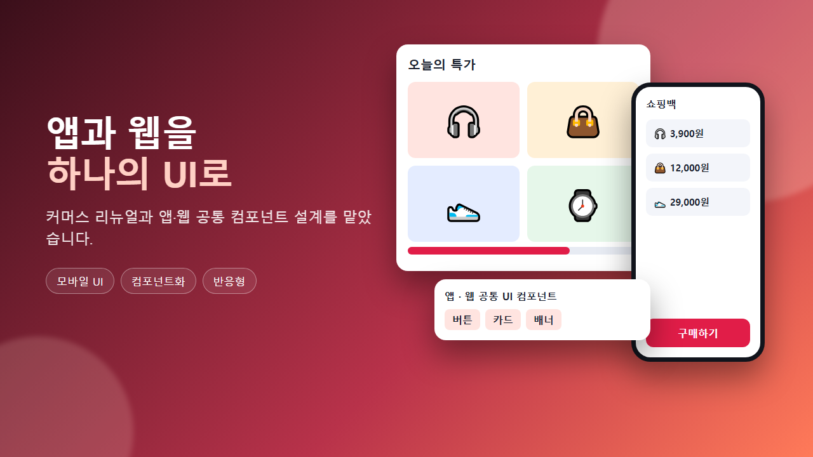

돈버는쇼핑 리뉴얼, 쇼핑백 앱·웹, 카카오톡 게임 연동 앱을 퍼블리싱했습니다.
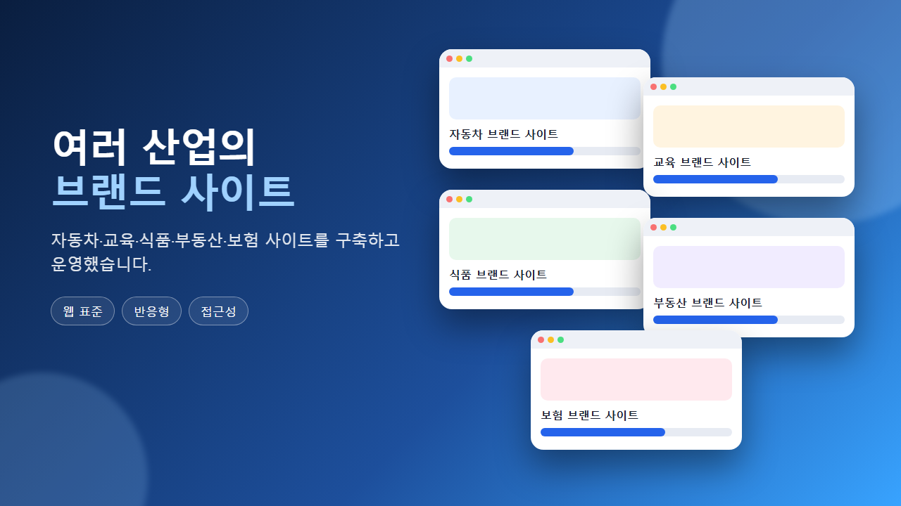

자동차·교육·식품·부동산·보험 등 여러 산업의 브랜드 사이트를 구축하고 운영했습니다.
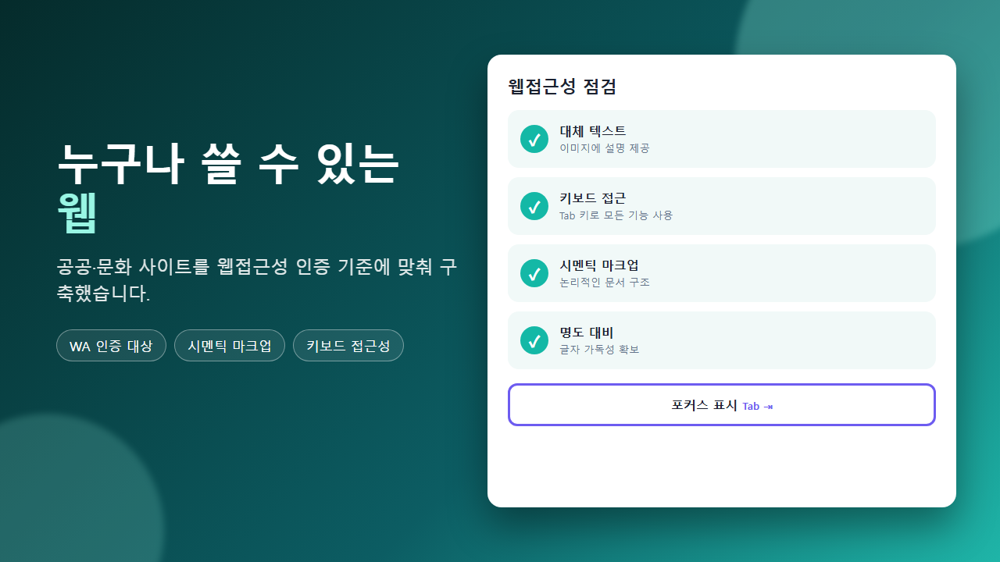

공공기관·문화예술 사이트를 구축하고 웹접근성(WA) 인증 대상 프로젝트를 수행했습니다.
퍼블리싱부터 Vue 3 구조 설계까지 한 번에 맡을 수 있습니다.